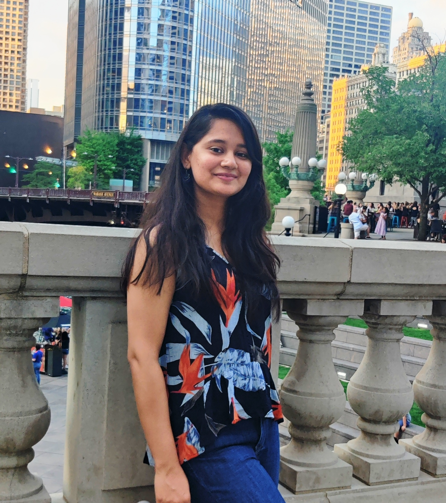

Sonali Srivastava
PhD Candidate, Virginia Tech
Experienced biosensing and AI-driven analytics researcher with a passion for developing innovative solutions that address global health and environmental challenges.
About Me
Experience
Graduate Research Assistant, Virginia Tech
- Developed SERS-based biosensors for virus detection in complex environmental samples.
- Enhanced biosensor performance by 5× through electrokinetic enrichment.
- Engineered metal nanoparticles using sol-gel synthesis and performed advanced characterization.
Graduate Research Assistant, University of Illinois Urbana-Champaign
- Conducted a carbonation study on cementitious materials for CO2 sequestration.
- Characterized carbonated phases using Raman spectroscopy, SEM, and XRD.
Education
Ph.D. in Environmental Engineering, Virginia Tech (2022-2026)
M.S. in Computer Science, Virginia Tech (2025-2026)
M.S. in Construction Materials, University of Illinois Urbana-Champaign (2020-2022)
B.Tech. in Civil Engineering, Indian Institute of Technology, Tirupati (2015-2019)
News
- Apr 2026 Received the VWRRC Student Grant from the Virginia Water Resources Research Center at Virginia Tech — a $10,000 competitive grant to support research on water resources challenges in Virginia.
- 2026 Awarded the C. Ellen Gonter Paper Award, Division of Environmental Chemistry (ENVR), ACS.
- 2025 Awarded the Graduate Student Award, Division of Environmental Chemistry (ENVR), ACS.
- Aug 2025 Presenting at the ACS Conference, Washington DC — "Optical and Electrical Sensing Synergy: Boosting SERS-Based Virus Detection."
- June 2025 Presented at the GRS & GRC Conference, Newry, Maine — "Protein Alterations in Cells Exposed to Gold Nanoparticles."
- Oct 2024 Presented at the SciX Conference, Raleigh, North Carolina — "Electrokinetic-Modulated Surface-Enhanced Raman Spectroscopy (EK-SERS) Immunoassay for Viral Detection."
Awards & Honors
- C. Ellen Gonter Paper Award, Division of Environmental Chemistry (ENVR), ACS (2026)
- Graduate Student Award, Division of Environmental Chemistry (ENVR), ACS (2025)
- Research Excellence Award, Sigma Xi Honor Society, Virginia Tech (2025)
- Certificate of Merit for presentation at the ACS Fall 2025 Meeting
- Interdisciplinary Graduate Education Program Assistantship, Virginia Tech (2022–2025)
- Ravindar K. and Kinra Fellowship, UIUC (2020–2021)
- Selected for the Cultural Youth Exchange Program to China, Indian Ministry of Youth Affairs & Sports (2017)
Selected Publications
- Nov 2024 Srivastava, S., et al. Machine Learning-Assisted Surface-Enhanced Raman Spectroscopy Detection for Environmental Applications: A Review.
- Dec 2023 Wang, W., Srivastava, S., et al. Digital SERS-LFT dipstick: ultra-sensitive, rapid virus quantification in environmental dust. Environmental Science & Technology.
- April 2023 Srivastava, S. and Garg, N. Tracking spatiotemporal evolution of cementitious carbonation via Raman imaging. Journal of Raman Spectroscopy 54, no. 4 (2023): 414–425.
Additional publications can be found here.
Presentations
- Aug 2025 ACS Conference, Washington DC — "Optical and Electrical Sensing Synergy: Boosting SERS-Based Virus Detection."
- June 2025 GRS & GRC Conference, Newry, Maine — "Protein Alterations in Cells Exposed to Gold Nanoparticles."
- Oct 2024 SciX Conference, Raleigh, North Carolina — "Electrokinetic-Modulated Surface-Enhanced Raman Spectroscopy (EK-SERS) Immunoassay for Viral Detection."
Projects
Electrokinetic-Modulated SERS Immunoassay
Developed an advanced biosensor integrating electrokinetics with SERS to achieve enhanced virus detection sensitivity.
Proteomics Study on Influenza-Infected Cells
Utilized LC-MS/MS and machine learning to analyze protein expression changes in virus-infected cells.
Let's Connect
Interested in collaborating or just want to say hi? Feel free to reach out!